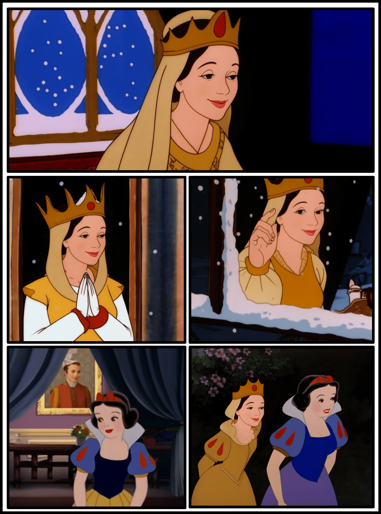
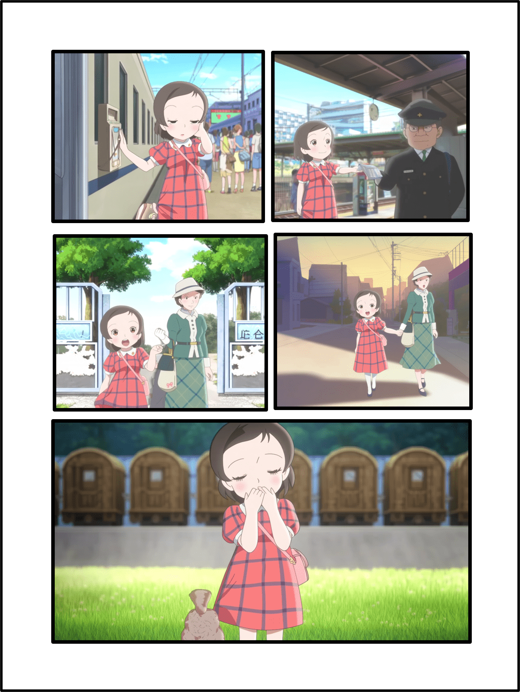
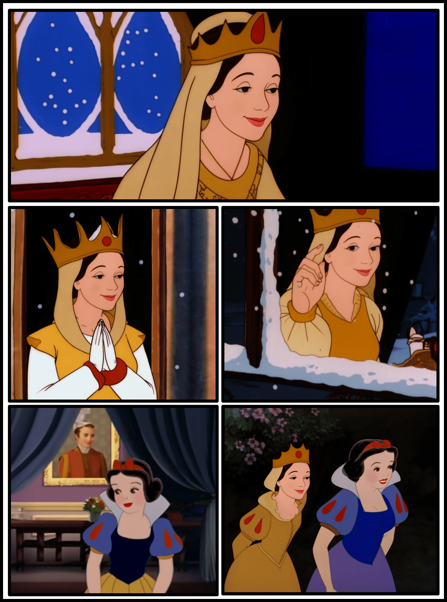
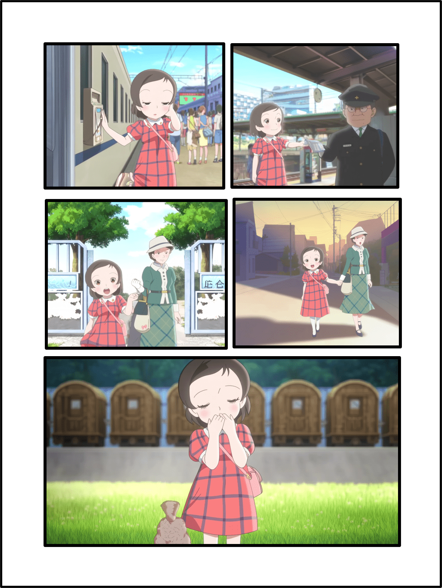

DreamingComics: A Story Visualization Pipeline via Subject and Layout Customized Generation using Video Models
A layout-aware story visualization framework that turns text scripts and reference characters into comic-style narratives with controllable layouts, consistent identities, and diverse artistic styles.

Abstract
Existing story visualization systems often rely on text-only control, which makes it difficult to decide where multiple characters should appear and to keep their visual appearance consistent across panels. DreamingComics addresses this by introducing a layout-aware framework that jointly reasons about subject identity, spatial layout, and artistic style for comic-style stories.
We build on a pretrained video diffusion transformer and repurpose it for image customization, leveraging its spatiotemporal priors to improve identity and style consistency across generated panels. To control spatial layout, we introduce RegionalRoPE, a region-aware rotary position embedding that re-indexes reference tokens according to target bounding boxes, and a masked condition loss that penalizes attention that leaks outside the designated regions. Complementing this, an LLM-based layout generator is fine-tuned on comic layout data to predict panel and character boxes directly from textual scripts, reducing the need for manual layout design.
On benchmarks such as ViStoryBench and DreamBench++, DreamingComics improves character consistency and style similarity over prior story visualization and image customization methods, while maintaining high spatial accuracy.
Video Overview
Method
DreamingComics targets comic-style story visualization, where each page consists of multiple panels with characters arranged in spatially meaningful compositions. Instead of treating a story as a simple sequence of equally sized frames, we adopt a comic-centric representation where each panel is described by its text, its bounding box, and a set of character-level bounding boxes. This lets us reason both about how panels occupy the page and how subjects are positioned within each panel. We then divide the task into two modules: an LLM-based layout generator and a layout-aware customization model, Dream-Illustrator.
LLM-based Layout Generator
Given a script split into panel-level descriptions, our layout generator predicts structured layouts of panel regions and character bounding boxes. We fine-tune a multimodal LLM on curated comic data, using supervised learning to map text to normalized panel and character boxes. The model learns comic-specific layout patterns such as reading order, reasonable panel coverage, and plausible character sizes and positions. At inference time, users simply provide captions, and the layout generator outputs panel-wise layouts that can be passed directly to the image customization stage.
Dream-Illustrator: Video-Model-Based Image Customization
For image generation, we introduce Dream-Illustrator, an image customization model built on top of a video diffusion transformer (HunyuanVideo-I2V with FramePack). We treat the reference character images as the first "frame(s)" and generate a target panel image as a subsequent frame, so the model can exploit cross-frame context and spatiotemporal priors to maintain identity and style. Reference images are encoded into latent tokens and concatenated with noisy latent tokens for the target image and text tokens from the script.

RegionalRoPE and Masked Condition Loss
Standard 3D rotary position embeddings assign the same origin to all references, which leads to entangled spatial cues, making precise layout control difficult. RegionalRoPE instead maps each reference latent to its target bounding box by re-indexing the positional coordinates according to the layout. This gives the model explicit spatial grounding, allowing it to associate each subject with a specific region in the panel while preserving its aspect ratio.
To further encourage the model to respect layout constraints, we introduce a masked condition loss that operates on cross-attention maps between reference tokens and the generated image. For each subject, we compute a binary mask from its bounding box and penalize attention mass that falls outside this region, reducing identity bleeding issues and promoting a clean, layout-aligned character placement.
Layout- and Identity-Paired Training Data
Training Dream-Illustrator requires paired samples that include reference images, target images, and layout conditions. We construct such data from structured video and animation datasets by sampling frame pairs for each subject, extracting subject and panel boxes, and filtering by automatic quality scores. In parallel, we build a comics layout dataset from multiple comic corpora, detecting panels and characters and generating textual descriptions. These datasets allow us to jointly train the layout generator and the layout-aware image customization model for story visualization.
Results
Story-Level Visualization
DreamingComics generates full comic pages with multiple panels while preserving character identities, artistic styles, layouts, and caption semantics across an entire story.
 



Identity & Style & Layout Preservation
Here we visualize how Dream-Illustrator maintains subject identity and art style across different characters and layouts, compared to prior state-of-the-art image customization methods, UNO and DreamO.

Layout Generation
Here we visualize layouts from our LLM-based generator to demonstrate the plausibility of our generated layouts. Given the same story but with different numbers of preceding panels, our layout generator maintains stable character positions while adapting flexibly to new contexts, indicating strong consistency along with controlled diversity.
Story Level Comparison
We first generate layouts from the input panel-wise captions and use them along with the reference images and captions to synthesize a full-length comic-style story. Layout-based methods like DiffSensei and Eligen does not preserve the aesthetics of references, while image-based customization methods such as RealGeneral, UNO, and DreamO cannot utilize layout conditions, which creates confusion in placing characters. For instance, DreamO places the gray-colored "Domestic Donkey" on the right side and the brown-colored "Wild Donkey" on the left, which is not intended in its caption. In contrast, our method produces accurate and consistent story visualizations in terms of identity consistency, style preservation, prompt adherence, and layout composition.

Acknowledgements
We acknowledge the creators and maintainers of the comic and video datasets used in this work and follow their licenses and usage guidelines. We also thank collaborators and reviewers for their helpful feedback.